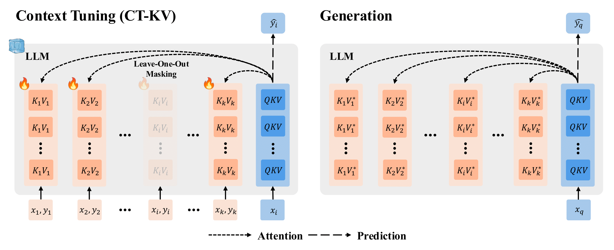
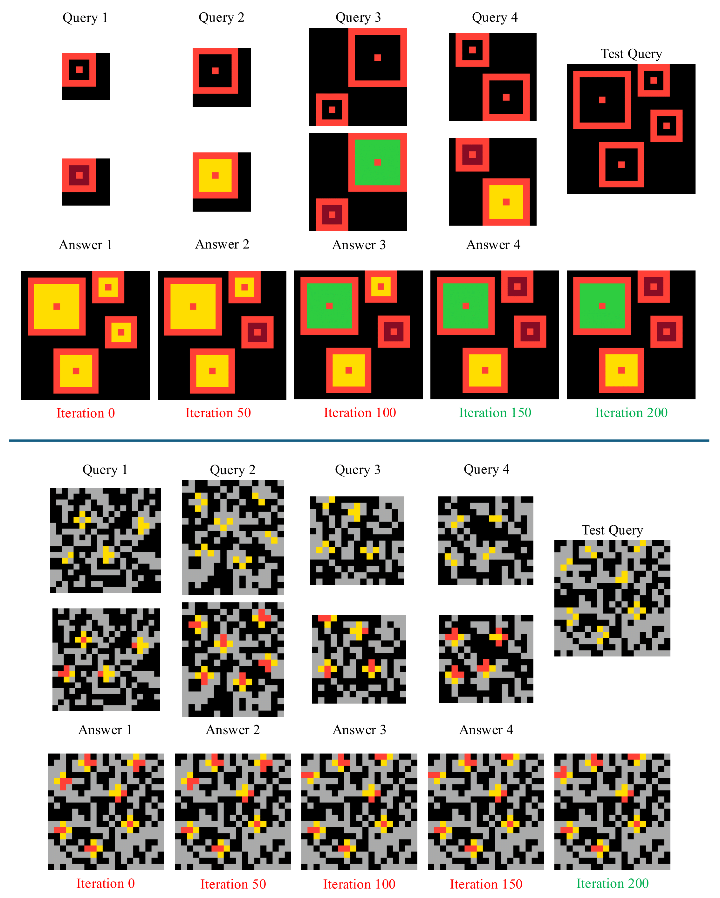
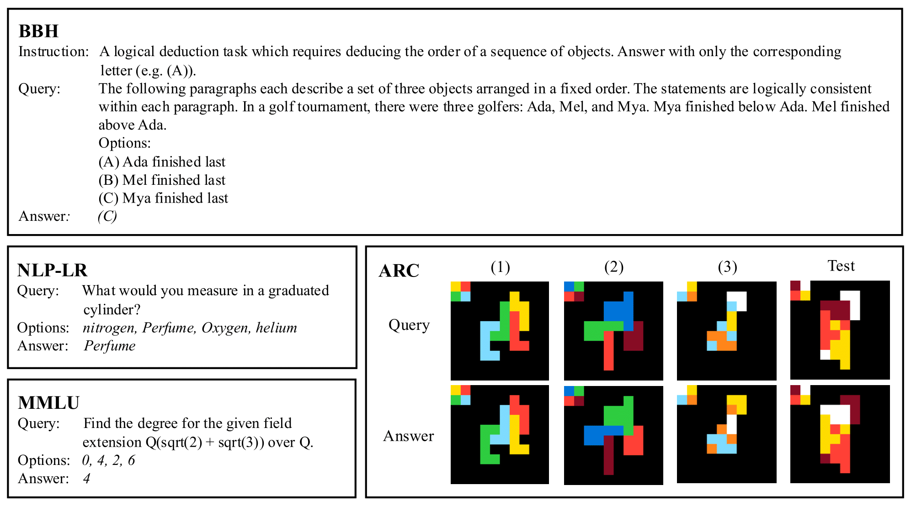
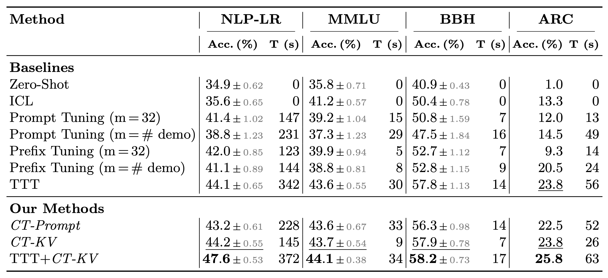

We introduce Context Tuning, a simple and effective method to significantly enhance few-shot adaptation of language models (LLMs) without fine-tuning model parameters. While prompt-based adaptation techniques have demonstrated the effectiveness of lightweight adaptation methods for large language models (LLMs), they typically initialize a trainable prompt or prefix with irrelevant tokens for the task at hand. In contrast, Context Tuning initializes the trainable prompt or prefix with task-specific demonstration examples, leveraging the model's inherent In-Context Learning (ICL) ability to extract relevant information for improved few-shot learning performance. Extensive evaluations on benchmarks such as CrossFit, UnifiedQA, MMLU, BIG-Bench Hard, and ARC demonstrate that Context Tuning outperforms traditional prompt-based adaptation methods and achieves competitive accuracy to Test-Time Training with significantly higher training efficiency.
We illustrate the CT-KV variant of Context Tuning. Our paper also contains details on the CT-Prompt variant.

We select sample tasks from ARC to illustrate how the generated answers gradually improve with CT-KV training. For each of the two ARC tasks at the top and bottom, we display 4 demonstration query-answer pairs, the test query, and model predictions at CT-KV training iterations 0, 50, 100, 150, 200. We color-code correct predictions in green and incorrect predictions in red.
- Top task: the model's prediction at iteration 0 (equivalent to In-Context Learning) shows a strong bias toward filling orange-border squares with yellow. As CT-KV training progresses, the model gradually learns to fill each orange-border square with the correct color.
- Bottom task: the model first learns that only grey grid cells can turn red, and then correctly completes the cross shapes.

We evaluate Context Tuning against training-free, prompt-based adaptation, and Test-Time Training methods on a diverse set of challenging datasets with GPT-2 and Llama 3 models.
We show a test pair from BBH, NLP-LR, and MMLU each, and 3 demonstration pairs followed by a test pair from ARC.

Based on our quantitative comparison of Context Tuning and baselines, we find that the CT-KV variant of Context Tuning significantly outperforms Zero-Shot Prompting, In-Context Learning, Prompt Tuning, and Prefix Tuning. CT-KV is also competitive with the more computationally intensive Test-Time Training approach. Finally, we show that CT-KV can serve as a post-hoc refinement step following Test-Time Training, leading to improved few-shot adaptation performance compared to either method used in isolation.

@misc{lu2025contexttuning,
title={Context Tuning for In-Context Optimization},
author={Jack Lu and Ryan Teehan and Zhenbang Yang and Mengye Ren},
year={2025},
eprint={2507.04221},
archivePrefix={arXiv},
primaryClass={cs.CL}
}